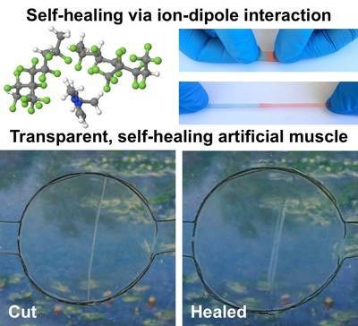
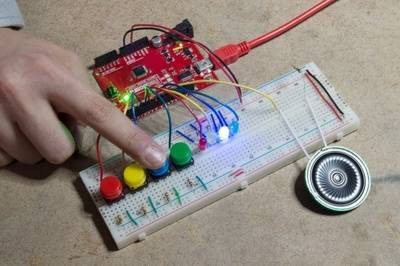
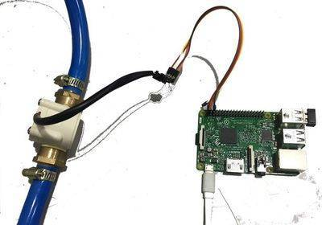
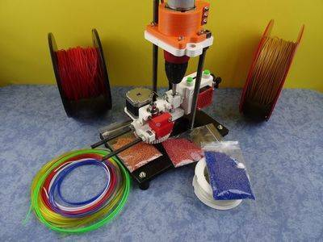

2017-01-05 - Nº 88

Editorial
Esta é a Newsletter Nº 88 que se apresenta com o mesmo formato que as anteriores. Se gostar da Newsletter partilhe-a!
Todas as Newsletters encontram-se indexadas no link.
Esta Newsletter tem os seguintes tópicos:
No ano de 2016 assistimos ao lançamento da nova norma Bluetooth® 5, a Wi-Fi Alliance® introduz a rede Wi-Fi HaLow™ e a União Europeia está a preparar-se para que no espaço europeu exista Wifi grátis em todo o lado até 2020. A fundação Raspberry Pi lança o Raspberry pi 3 e atinge 10 milhões de Raspberrys vendidos. A fabricação de chips encontra-se agora nos 7nm com a GLOBALFOUNDRIES, a ARM com a TSMC e a AMD a produzirem chips com estas especificações. Foi produzido em 2016 o primeiro Processador com 1,000 Cores - o KiloCore. A Amazon disponibilizou na sua cloud EC2 GPUs para computação. A Microsemi foi o primeiro fornecedor de FPGA a oferecer a arquitectura aberta RISC-V. Descobriu-se que basta um simples instrução para congelar os processadores da familia Skylake da Intel. No Japão, a última fábrica de produção de Video Gravadores VHS encerrou a sua produção. A Atmel foi adquirida pela Microchip. A Sony adquiriu a Altair Semiconductor. A Premier Farnell foi adquirida pela DATWYLER. A Qualcomm comprou a NXP. A Analog Devices e a Linear Technology juntaram-se para criar uma nova companhia. A Intel adquiriu a Nervana e a Computer Vision. E finalmente os "dois" Arduinos voltaram-se a juntar. A Renesas compra a Intersil criando um dos fornecedores de soluções integradas. A SoftBank junta-se à ARM. Faleceu em 2016, Andrew S. Grove, um dos fundadores da Intel
No campo da inteligência artificial o AlphaGo, superou o desafio de ganhar aos humanos as partidas de Go. A Microsoft desenvolve sistema de inteligência artificial para ajudar os Médicos a encontrarem os tratamentos adequados para o cancro. Um homem tetraplégico conseguiu mover a mão apenas com a mente. Na Irlanda do Norte, uma criança recebeu o primeiro transplante de um rim recorrendo a impressão 3D. Uma criança de 9 anos construiu uma mão mecânica para o seu professor. A NVIDIA apresentou o Xavier, um supercomputador para o Futuro do transporte autónomo. O Hyperloop One para além de ter alcançado os 187kph na primeira volta de teste ainda abriu a sua primeira fábrica e já estabeleceu uma parceria no Dubai para a construção do primeiro hyperloop para carga.
O avião solar SolarImpluse fez história completando a primeira viagem a volta da Terra. Em Inglaterra, em França e na Amazónia são dados os primeiros passos para a entrega de encomendas usando Drones. A Disney World incorporou no seu espectáculo o uso de drones para fazerem coreografias de luz. O Solar Voyager - navio autónomo - fez história cruzando o oceano Atlantico apenas com recurso a energia solar. A rede de satélites de geoposicionamento Galileo ficou operacional. Depois dos primeiros 14 satélites, mais 4 foram colocados em órbita dispobilizando a quantidade mínima para o funcionamento desta rede. Depois de alguns sucessos, a SpaceX teve um problema e explodiu o foguetão Falcon 9 que iria levar entrou outras coisas um satélite do Facebook Internet.org. No campo dos fracassos a sonda Schiaparelli chocou contra a superfície de Marte impedindo a conclusão da sua missão. Também ficámos a saber que a estação espacial Tiangong-1 irá despenhar-se na Terra algures este ano de 2017. Os símbolos quimicos dos elementos atómicos 113, 115, 117 e 118 foram atribuidos.
Depois de ter reduzido a fatura do custo arrefecimento dos datacenter em 40%, a Google prepara-se para usar apenas energias renováveis para as suas necessidade energéticas. A Panasonic desenvolveu uma bateria de iões de lítio que é dobrável e fléxivel. No campo da tecnologias abertas, a SiFive apresentou a primeira plataforma de chip open source para a industria. A Microsoft abriu a linguagem P para o IoT. A Google desenvolveu e disponibilizou em open source um sistema de fontes - Noto - que cobre cerca de 800 línguas e tem mais de 110,000 caracteres.
O Linux 4.4 foi lançado assim como o Ubuntu 16.04 LTS, o macOS Sierra e o mbed OS 5.2. A Norma HTML 5.1 foi publicada assim como a especificação do Javascript - ECMAScript® 2016. Ficou igualmente disponível o Ubuntu para o Windows também conhecido como bash for Windows. O maior número primo conhecido é o 2^274,207,281-1. Trata-se de um número com cerca de 22 milhões de dígitos. Ondas gravitacionais foram detetadas 100 anos depois da previsão de Abert Einstein. Um tubarão com cerca de 400 anos foi descoberto.
Comemora-se hoje o nascimento de King C. Gillette, este inventor Norte-Americano ficou mundialmente conhecido pela sua invenção da lâmina de barbear fina e descartável. Faz também anos hoje que nascia David Wilkinson em 1771 nos Estados Unidos. Ete engenheiro mecanico é responsável pela invenção do torno para fazer roscas de parafuso. Este invento foi particularmente importante no desenvolvimento da industria da maquinaria no inicio do século 19.
Nesta primeira semana de 2017, começou a CES 2017 em Las Vegas, e dela chegam novidades do Faraday Future. Este veículo eléctrico não teve a melhor estreia - não o conseguiram ligar, ainda assim poderá ser um concorrente interessante à Tesla. Foi identificado um novo orgão no corpoo humano - o mesentério. Graças ao trabalho de J. Calvin Coffey, um investigador da universidade do hospital de Limerick, na Irlanda, e ao fim de um estudo que durou mais de seis anos, cientistas acreditam agora que a estrutura é, na verdade, um órgão único e contínuo. Este órgão, que só agora é reconhecido, é uma dupla prega do peritoneu, que liga o intestino à parede do abdómen. Tem uma forma de leque, contém vasos sanguíneos, nervos e gânglios linfáticos. O Inkscape 0.92 foi finalmente lançado. Esta versão deste software open source trás novidades ao nivel do suporte SVG2 e CSS3 entre outras. O HDMI forum anunciou a versão 2.1 da especificação HDMI. Esta nova versão suporta HDR dinâmico, suporte para 8K a 60Hz e 4K a 120Hz, aumento da largura de banda para 48Gbps, entre outras.
Na Newsletter desta semana apresentamos diversos projetos de maker assim como alguns modelos 3D que poderão ser úteis. É apresentado também um livro sobre Azure para programadores.
 João Alves ([email protected])
João Alves ([email protected])
O conteúdo da Newsletter encontra-se sob a licença  Creative Commons Attribution-NonCommercial-ShareAlike 4.0 International License.
Creative Commons Attribution-NonCommercial-ShareAlike 4.0 International License.
Novidades da Semana ^
Gut Decision: Scientists Identify New Organ in Humans
"A mighty membrane that twists and turns through the gut is starting the new year with a new classification: the structure, called the mesentery, has been upgraded to an organ. Scientists have known about the structure, which connects a person's small and large intestines to the abdominal wall and anchors them in place, according to the Mayo Clinic. However, until now, it was thought of as a number of distinct membranes by most scientists. Interestingly, in one of its earliest descriptions, none other than Leonardo da Vinci identified the membranes as a single structure, according to a recent review." [...]
FF 91 Press Release | Faraday Future
"Faraday Future (FF) has revealed FF 91 (“nine one”), its first production vehicle, at an exclusive event prior to the 2017 Consumer Electronics Show (CES). Built upon the company’s Variable Platform Architecture (VPA), FF 91 represents a bold new breed of electric mobility that combines supercar performance, precise handling, the comfort of an ultra-luxury passenger vehicle, and a unique collection of intelligent internet features. Starting now FF will start accepting reservations for FF 91 through the company’s newly redesigned website, FF.com. Reservations are $5,000 and are fully refundable. The first 300 orders will have the option to upgrade their reservation in March 2017 to join an exclusive launch series, the Alliance Edition." [...]
Inkscape Version 0.92 is Released!
"The Inkscape project announces a new version 0.92 of its popular vector drawing software. New features include mesh gradients, improved SVG2 and CSS3 support, new path effects, interactive smoothing for the pencil tool, a new Object dialog for directly managing all drawing elements, and much more. Infrastructural changes are also under way, including a switch to CMake from the venerable Autotools build system." [...]
Outras Notícias
- A breakthrough in miniaturising lidars for autonomous driving
- How Robots Can Acquire New Skills from Their Shared Experience
- Lego targets pre-Mindstorms minds with its Boost educational kit
- Cormorant UAV (formerly AirMule) Completes First Fully Autonomous Pattern Flight Over Terrain
- HDMI forum announces version 2.1 of the HDMI specification
- DeepMind’s AlphaGo is secretly beating human players online
- Qualcomm Snapdragon 835 Mobile Platform to Power Next-Generation Immersive Experiences
- A New Home on Mars: NASA Langley’s Icy Concept for Living on the Red Planet
- Solar Could Beat Coal to Become the Cheapest Power on Earth
- Toyota Concept-i Makes the Future of Mobility Human
- NVIDIA, AUDI Partner to Put World's Most Advanced AI Car on Road by 2020
- Intel Unveils Compute Card, a Credit Card-Sized Compute Platform
- NASA Selects Two Missions to Explore the Early Solar System
Ciência e Tecnologia ^
Divide and conquer pattern searching
"Searching for recurring patterns in network systems has become a fundamental part of research and discovery in fields as diverse as biology and social media. KAUST researchers have developed a pattern or graph-mining framework that promises to significantly speed up searches on massive network data sets. “A graph is a data structure that models complex relationships among objects,” explained Panagiotis Kalnis, leader of the research team from the KAUST Extreme Computing Research Center. “Graphs are widely used in many modern applications, including social networks, biological networks like protein-to-protein interactions, and communication networks like the internet.” In these applications, one of the most important operations is the process of finding recurring graphs that reveal how objects tend to connect to each other. The process, which is called frequent subgraph mining (FSM), is an essential building block of many knowledge extraction techniques in social studies, bioinformatics and image processing, as well as in security and fraud detection. However, graphs may contain hundreds of millions of objects and billions of relationships, which means that extracting recurring patterns places huge demands on time and computing resources." [...]
Brain activity is too complicated for humans to decipher. Machines can decode it for us
"Over the past several years, Jack Gallant’s neuroscience lab has produced a string of papers that sound absurd. In 2011, the lab showed it was possible to recreate movie clips just from observing the brain activity of people watching movies. Using a computer to regenerate the images of a film just by scanning the brain of a person watching one is, in a sense, mind reading. Similarly, in 2015, Gallant’s team of scientists predicted which famous paintings people were picturing in their minds by observing the activity of their brains. This year, the team announced in the journal Nature that they had created an “atlas” of where 10,000-plus individual words reside in the brain — just by having study participants listen to podcasts. How did they do all this? By using machine learning tools — a type of artificial intelligence — to mine huge troves of brain data and find the patterns of brain activity that predict our perception. The goal here isn’t to build a mind-reading machine (although it’s often confused for that). Neuroscientists aren’t interested in stealing your passwords right out of your head. Nor are they interested in your darkest secrets. The real goal is a lot bigger. By turning neuroscience into a “big data” science, and using machine learning to mine that data, Gallant and others in the field have the potential to revolutionize our understanding of the brain." [...]
Why connecting all the world’s robots will drive 2017’s top technology trends
"If you want to make predictions for the future, you need to find the trajectory of events in the past. So to work out what shape digital technology will likely take next year, we should look back to the major developments of 2016. And the past year’s developments point to a 2017 shaped by the next phase of virtual and augmented reality, the emergence of an internet for artificial intelligence and the creation of personalised digital assistants that follow us across devices. One technology in particular has dominated the news throughout the year and made the birthday wish-lists of children and adults alike: virtual reality. VR began to bloom commercially in 2016 – with HTC, Oculus (owned by Facebook) and PlayStation all releasing their latest headsets. But 2017 will almost certainly be a pivotal year for VR, given its rather precarious position on the “hype cycle”." [...]
Capturing the energy of slow motion
"A new concept in energy harvesting could capture energy that is currently mostly wasted due to its characteristic low frequency and use it to power next-generation electronic devices. In a project funded by electronics giant Samsung, a team of Penn State materials scientists and electrical engineers has designed a mechanical energy transducer based on flexible organic ionic diodes that points toward a new direction in scalable energy harvesting of unused mechanical energy in the environment, including wind, ocean waves and human motion. Devices to harvest ambient mechanical energy to convert to electricity are widely used to power wearable electronics, biomedical devices and the so-called Internet of Things (IoT) -- everyday objects that wirelessly connect to the internet. The most common of these devices, based on the piezoelectric effect, operate most efficiently at high frequency, greater than 10 vibrations per second. But at lower frequencies their performance falls off dramatically." [...]

A Wolverine Inspired Material
"Scientists, including several from the University of California, Riverside, have developed a transparent, self-healing, highly stretchable conductive material that can be electrically activated to power artificial muscles and could be used to improve batteries, electronic devices, and robots. The findings, which were published today in the journal Advanced Material, represent the first time scientists have created an ionic conductor, meaning materials that ions can flow through, that is transparent, mechanically stretchable, and self-healing. The material has potential applications in a wide range of fields. It could give robots the ability to self-heal after mechanical failure; extend the lifetime of lithium ion batteries used in electronics and electric cars; and improve biosensors used in the medical field and environmental monitoring." [...]
HPE's New Chip Marks a Milestone in Optical Computing
"We may use photons to carry our data, but we rely on the electron to put it to use. One day that division of labor might not be so stark. A team at Hewlett Packard Labs, in Palo Alto, Calif., has built a demonstration chip that could help push some particularly thorny computations into the realm of light, potentially boosting speed and saving energy in the process. Silicon integrated circuits containing parts that can manipulate light are not new. But this chip, which integrates 1,052 optical components, is the biggest and most complex in which all the photonic components work together to perform a computation, says team member Dave Kielpinski, a senior research scientist at Hewlett Packard Labs (now a part of Hewlett Packard Enterprise, or HPE). “We believe that it is by a wide margin,” he says. The chip, which was developed through the U.S. Defense Advanced Research Projects Agency’s Mesodynamic Architectures program and was still undergoing testing as IEEE Spectrum went to press, is an implementation of an Ising machine—an approach to computation that could potentially solve some problems, such as the infamous “traveling salesman problem,” faster than conventional computers can." [...]
NTU and German scientists turn memory chips into processors to speed up computing tasks
"A team of international scientists have found a way to make memory chips perform computing tasks, which is traditionally done by computer processors like those made by Intel and Qualcomm. This means data could now be processed in the same spot where it is stored, leading to much faster and thinner mobile devices and computers. This new computing circuit was developed by Nanyang Technological University, Singapore (NTU Singapore) in collaboration with Germany’s RWTH Aachen University and Forschungszentrum Juelich, one of the largest interdisciplinary research centres in Europe. It is built using state-of-the-art memory chips known as Redox-based resistive switching random access memory (ReRAM). Developed by global chipmakers such as SanDisk and Panasonic, this type of chip is one of the fastest memory modules that will soon be available commercially. However, instead of storing information, NTU Assistant Professor Anupam Chattopadhyay in collaboration with Professor Rainer Waser from RWTH Aachen University and Dr Vikas Rana from Forschungszentrum Juelich showed how ReRAM can also be used to process data." [...]
How Carbon Nanotubes Could Help Replace Silicon in Chip Fabrication
"It looks like the age of silicon may be coming to a close. Technological giant IBM wants to try using carbon nanotubes in chip design instead. Their emerging research on creating and manipulating these nanoscale structures could be the key to success. Moore's Law has proved constant in the semiconductor industry, providing hope for more powerful computers. The law states that the number of transistors on a silicon chip doubles every 18 months, hence producing devices twice as powerful (typically). If a computer is slow today, never fear because just beyond the horizon is a new processor that could speed up computing significantly. Well, Moore’s Law may finally come to an end in 2020 which means beyond the horizon may be a processor that is only slightly better or cheaper. So how will modern computing keep up with power demand? What alternatives exist for such a computational problem? Some solutions seem rather simple while others are more exotic in nature. For example, to squeeze the most out of silicon may require a blast from the past with programmers aiming for optimization above all else. Object orientated programming is great for program creation but uses large amounts of resources—so programmers may shift to using assembly for routines that require speed. More efficient algorithms could also help with CPU efficiency as well as freeing up CPU resources for other operations." [...]
Additive manufacturing: A new twist for stretchable electronics?
"Electronic components that can be elongated or twisted – known as “stretchable” electronics – could soon be used to power electronic gadgets, the onboard systems of vehicles, medical devices and other products. And a 3-D printing-like approach to manufacturing may help make stretchable electronics more prevalent, say researchers at Missouri University of Science and Technology. Writing in the January 2017 edition of the journal Micromachines, Missouri S&T researchers assess the current state of the emerging field of stretchable electronics, focusing on a type of conductor that can be built on or set into the surface of a polymer known as elastomer. These conductors could one day replace the rigid, brittle circuit board that powers many of today’s electronic devices. They could be used, for example, as wearable sensors that adhere to the skin to monitor heart rate or brain activity, as sensors in clothing or as thin solar panels that could be plastered onto curved surfaces." [...]
UB20M voltage detector eliminates standby power
"The new UB20M voltage detector IC in Fig. 1 allows circuit designers to eliminate standby power, to develop circuits that perform continuous monitoring without using battery power, and to implement wireless wake-up. The device is a sensor-driven circuit that requires no power rail. When the input voltage rises to a typical threshold of 0.65 V, the voltage detector triggers an open-drain output, which activates a switch, as illustrated in Fig. 2. This allows the powering up of sub-systems. The voltage detector meets five criteria which allow it to be sensor-driven, see Fig. 2. Its input is rugged and survives 20 V without using traditional protection circuits that would clamp the signal, and thereby affect the data or power in the signal. The threshold is low at 0.65 V, to provide sufficient sensitivity (we also have lower threshold variants). The sensor uses only a few pA from the sensor, thereby permitting the use of conventional sensors, rather than more powerful and bulky energy harvesters. The detector is suitable for input signals with input voltage gradients from 0 to 10V/ms. At gradients higher than 10V/ms, the threshold increases. Detection hysteresis prevents output oscillations." [...]
Documentação ^
A documentação é parte essencial do processo de aprendizagem e a Internet além de artigos interessantes de explorar também tem alguma documentação em formato PDF interessante de ler. Todos os links aqui apresentados são para conteúdo disponibilizado livremente pelo editor do livro.
Understanding Azure—a guide for developers
"Like developers, apps come in all sizes. Apps once thought impossible due to scale, complexity, or because they simply couldn’t be imagined, are now a reality with Azure. With our developer guide, you’ll see how our comprehensive set of app platform services can fit your needs, helping you navigate the architectural approaches and most common design patterns you face when building modern applications. And because Azure is constantly evolving, sign up to be notified of updates to the guide to ensure you make the most of any new Azure service." [...]
Modelos 3D ^
Com a disponibilidade de ferramentas que permitem dar azo a nossa imaginação na criação de peças 3D e espaços como o thingiverse para as publicar, esta rubrica apresenta alguns modelos selecionados que poderão ser úteis.
Simple Sprayer Nozzle (Customizable)
"I created this simple spray nozzle to plug in to a 1/4" quick disconnect ball valve to use as a little sprayer for plants. The SCAD file can be customized for different connection sizes, face sizes and hole sizes. If you change the face size some minor edits will be required to add more holes but everything is commented and should be clear. No supports are required." [...]
Center Finder
"A clever to tool to mark the center of a wooden sheet or beam. Just place the two legs around your piece you like too have marked in the center and mark a point or draw a line with a pen using one of the holes in the middle. THis tool is inspired from a a one time tool from woodpeckers, unfortunately not available any more, so I made one by myself using a 3D Printer." [...]
Parametric Container
"Fully parametric box/container. edit 24.03.2013: Added version for Customizer. If you need more option download the file "box_openscad_files_with_examples.zip" and use with OpenSCAD." [...]
Projetos Maker ^
Diversos Projetos interessantes.
Automated Resistor Sorter with GUI
"Our project is a resistor sorter that allows users to input multiple resistors, measure their resistance, and sort them into predefined bins or return them to the user. For a video of our sorter, please see our Project Demo. From the onset, we wanted to make a project that approached a realizable product where users can input multiple resistors and easily have them sorted for them. The project involved coordinating physical hardware with motor controllers and a user interface. We implemented the mechanical hardware via 3D printed polylactic acid (PLA) plastic for low cost and the rapid iteration on designs. To control the physical constructions, a servo, stepper motor, and solenoid are controlled via the PIC32 and drive transistors to allow the resistors to be sorted. Finally, the user interface allows easy and intuitive interaction with the system. These three sections culminate in a design that provides a basis for a potential product providing basic laboratory assistance." [...]
DIY Bench Power Supply (Single Channel)
"Every engineer needs at least one bench power supply in his house. I agree one can get the power supply directly from the store, but they are costly and some are ugly in terms of design too. We all need to make sure that the power supply represents the person who is using it, whether it is a student or an engineer or an hobbyist, this is my personal opinion. Let's make the case creative and include features of a high end model. Lets modularize it so that in future we can modify it. This is a single channel power supply." [...]
PiFold
"PiFold-A handy PiZero based server that fits in a wallet. Battery, charge circuit and wifi included. Currently using Anyfesto, a variant of PirateBox, to serve up ebooks and files via a web interface plus audio streaming via VLC. Secure VOIP service via Mumble, IRC and shell services are available if wanted. Why? For when connectivity to the Internet(tm)(c) is not available or is unwise to use. Also for sharing resources to those in your local area. Where? From your person to the range of wifi. Can be augmented by having wifi repeaters in range. A wallet for cash, cache and content. A 3d printed case is optionally available as are instructions to make a tyvek/paper wallet. Parts and instructions for an optional solar charging unit are now included." [...]
Breathalyzer in Arduino
"This is DIY for a breathalyzer device, for its implementation will be used the Arduino development platform, a microcontroller that provides a large amount of study material, due to its popularity in academic world. An alcohol sensor will be used to make alcohol measurements and a liquid crystal display (LCD) and LEDs to present the results to the user. The code is in portuguese if you want you can change it." [...]
ATtiny85 Robot Insect
"The intention is to build an as simple as possible yet beautiful robot insect, and then apply it to their own choice, as a swarm insect or equipped with an IR sensor or color sensor ........ I would like to see two Robot Insects could communicate with each other via IR or Mic and Piezo" [...]
Gestured Controlled Smart Home
"Home Automation is the biggest domestic technological improvement of this generation, toe to toe with drones. It can provide full control of every piece of hardware in a house, if done well: from light control to preparing coffee at a specific hour of the day, key-less doors to automatic plant irrigation. There's truly no limit to Homes Automation, and with such a powerful board as the MKR1000, which itself resolves the WIFI issue, it becomes straightforward to connect an Android device and use it to control the lights, for example. Furthermore, using wifi over Bluetooth for this project overcomes the limitation of the Bluetooth range issue. The MYO is a gesture control armband that detects EMS data from the muscles in the users arm, therefore it can detect poses he does with his hands, plus it has a built-in accelerometer, which extends the possibilities of control to a great extent. With this sort of technology, there is no need of using your smartphone, just finger spread your hand and voilà: lights turn on and off thanks to it. Wave right twice, once left, double tap your thumb with your middle finger and voilà again, the door unlocks, Jedi style. With this feature, the projects upgrades from Home Automation to Gesture Controlled Home Automation." [...]
Garage Parking Stop Light
"I've seen several of these both online for sale and other implementations, and so I thought I'd give it a try. I had all the parts for this project laying around except for the Novelty Stop Light, so with a quick Amazon order, that was resolved. Now let me be clear. My wife has NO issues parking in the garage; let me say this at the outset. There was no need - just an impulse to create. I guess you can call this the "disclaimer" to keep me out of trouble." [...]
Old-school two-way pager with Arduino
"Looking to recreate the glory of the late 90s and early 2000s, I thought I would try to make my own two-way pager, just like Jay-Z used to use! But I’ve found this idea to be more useful than at first glance—I designed it so it could be used by children in lieu of a real cell phone, or it could be used as an “SOS” button for someone working alone outdoors or even exercising (if it was a bit smaller). And for the last few weeks, this device has been always on in my living room where my wife and I leave silly messages for each other. Summary: This project sends and receives text (SMS) messages via an arduino with cellular modem built into a small enclosure with an LCD display and simple control buttons." [...]
Kandybot
"Kandybot is an Internet-controlled, multipurpose robot which can be controlled anywhere from the world using Android app. Kandybot can be used for surveillance, home automation, to kill zombies and whatever you want to do - the limit is your imagination. Kandybot is powered by Firebase and Kandy.io. There are two main things we need to make an Internet-controlled robot. First is to control the robot movements and gripper in real-time; second is to transmit video from the Kandybot to the Internet. To control the movements of bot in real-time, we are using Firebase Realtime Database. And to transmit livestream video, we are using Kandy.io. We are using two Android phones both are connected to Kandy.io and Firebase. One phone is directly installed onto the robot's head (let's call it "Kandy mobile"), and the other is used as a controller which can be used anywhere by virtue of being connected to the Internet (let's call it "Controller Mobile"). Suppose the user presses the forward movement button, the message will be sent to the Firebase Realtime Database. Kandy mobile is also connected to this database, therefore it will know the user pressed the forward movement button. Kandy mobile will control the movement by sending a Bluetooth message to the Arduino. After receiving the message from Bluetooth, the Arduino controls the motors." [...]
Smart Fridge
"For our end-project for school we (Vincent & I) wanted to create something awesome, something with lights, buttons, Raspberry Pi, thermal printer and an app. We wanted to make something smart and eventually we got the idea: A Smart Fridge! And we made it. It was a lot of work and it took too many hours, but it was all worth it! We used a lot of online resources, from StackOverflow to the Raspberry Pi forum, so we want to share it with you, to thank the community. We first want to show the project and then explain how you can create your own Smart Fridge and finally we'll show you some of the tricks we did to make it." [...]
Robotic Car controlledover Bluetooth with Obstacle Avoidance
"Obstacle avoidance is made possible by using IR sensors which detect the obstacle. I was controlling the robotic car from my Android device and the car kept breaking because it would crash into things. So I added an obstacle avoidance system. I have used the Arduino Uno to driver the motors using a motor driver and an IR sensor which is controlled over BLE." [...]
FPV Virtual Reality Arduino Controlled Tracked Robot
"Have you ever tried to look at the world from a different point of view? With this project you can control a tracked robot with your brainwaves or with a joystick while you are watching its camera's live-stream in a virtual reality glass. This is an all terrain vehicle, that means that you can control it on snow, sand, any kind of ground, wet surface and of course indoors. It is powered by two 18650 lithium-ion batteries with a capacity of 2600 mAh. These are connected in series so the maximum voltage is 8.4 volts, that ensures the seamless operation. Can climb hills that up to 35-40 degrees. The maximum control range with the new HC-12 serial communication module is 1.8-1 kilometers if the controllers can see each other. That's insane! Of course the WiFi FPV's range is only around 45-50 meters, but the HC-12 ensures a very stable communication." [...]
DIY Arduino: A perfboard and 3 simple steps...
"Hey there, Ever wanted to build your own Arduino? Well, here’s how…. PS: For all those fanatics who’ve been pestering me ever since I built my first Arduino." [...]
64 Key Infrared Remote Controller using PT2222M – NEC Code
"64 channels Infra-Red Remote Transmitter circuit build around PT2222M IC, The IC is pin to pin compatible with NEC uPD6122 respectively, the remote is capable of controlling 64 functions keys and 3 double keys. The PT2222M Infra-red remote control transmission ICs using the NEC transmission format that is ideally suited for TVs, DVD Players, Audio Equipment, Air Condition, etc. By combining external diode and resistors, maximum of 65536 custom codes can be specified. The NEC transmission format consists of leader codes, custom codes (16 Bits), and data codes (16 Bits). It can be used for various systems through decoding by a microcontroller." [...]
Internet Controlled RC Car
"This project allows a user to control an RC wirelessly via WiFi through the use of the app, Blynk, which must be downloaded on your phone. This project is a continuation from the Line Follower Robot project I posted previously, which you can find HERE. If you have not already seen that project and you are just getting started with microcontrollers, I would recommend visiting that project first, and come here after. Below is what that final product will look like when you're done!" [...]

Hardware Hump Day: DIY Game Buzzer for National Trivia Day
"Happy National Trivia day, ya nerds! In honor of this very special day dedicated to the great institution of trivia, we have built a four-person game buzzer interface to bring some game show action into your very own living room! The year 2017 has finally arrived, and we all want to do better this year. Why not start by breathing some new life into your game night? An extra competitive edge is guaranteed! This DIY game buzzer uses the SparkFun RedBoard connected to four momentary push buttons—each representing a player or team: red, yellow, green and blue. There is an LED for each team in its corresponding color and one speaker. When your game night host asks a question, each team has the opportunity to buzz in. When the first team pushes its button, the corresponding LED will light up for five seconds and a unique tone will play on the speaker for one second. There will also be an indication on the serial monitor as to which team succeeded in buzzing in first. Once the first team manages to press its button, the rest of the players or teams become “locked out” for five seconds so there is no confusion regarding who hit the button first!" [...]
Bluetooth controlled rover (BB8)
"This instructable is my first so don't be too hard on me. Anways this instructable will be based on an arduino, hc-06 bluetooth module and an android phone. You may have seen something similar to what I have just explained and in fact this actually isn't an original project. I used all sorts of ideas from ASCAS, Jrbedard, Bigdog1971, and NamedJohnny. I combined all of their BB8 or rover projects into one while also adding a few modifications of my own both in the hardware and the software. You can also check out their tutorials if you want to, but I guarantee you mine is both the cheapest and the easiest to build (unless you already own a 3d printer - in that case us Jrbedards tutorial). All that put aside, there is just one more thing before we get to building. The way I have built this project allows you to unlock your imagination and maker skills to build something besides what I have shown you. In fact that is the reason BB8 is in parentheses in the title - "Bluetooth controlled rover (BB8)"- It is because you don't need to build a BB8. I have divided this project into two halves. The electronics and the BB8. Use the electronics, but use your imagination to create something besides a BB8. The power to do whatever you want with this project is in your hands. Before that gets too deep, lets actually start. So... cue the materials! Once more thing before we cue the materials. You will probably see, throughout this instructable a lot of "if you need extra help, look at this" or "if you aren't experienced, look at this". Don't worry about this, I'm not saying you can't do it. I just added all of those extras because when I was looking over my own instructable none of it made sense to me, which is why I added everything." [...]
Tertiarm - 3d printed robot arm
"This is a 3D printed robot arm based on Ikea Tertial lamp. I use lamp because it has very good kinematic with using springs to unload servos. I cut all beam, but you can use any length. It has 5 DOF and use 5 standart size servo. You can find list of all components and printing part in BOM. It cost about $60 for me and use small amount of plastic. I haven't done any instruction yet, but I will be happy to answer all your question." [...]
Lunar Phase Clock
"In this Instructable we will be building a dynamic lunar lamp with the Raspberry Pi. With your very own lunar clock you'll always know the current phase of the moon, no matter the weather! Budding astronomer? Recently bitten by a werewolf? Whatever your lunar-phase-knowing needs, the Lunar Phase Clock has you covered! If you're interested in getting started on the build, move on over to the next step. Here we'll talk about the astronomy behind the project. So what are the phases of the Moon? Just as the Earth orbits the Sun, so too the Moon orbits the Earth. The Moon is tidally locked to the Earth, which means that because the Moon completes its own rotation in the same time it take to orbit around the Earth, we always see the same side of the Moon. While we may be stuck to the same view of the Moon, the relationship between the Earth and Sun as the Moon completes its orbit is constantly changing. This means that it will be illuminated to varying degrees (or not at all!) and will take on a distinct shape. These distinct shapes are what we refer to as the lunar phases. The Moon completes a cycle around the Earth every 29.53 days; this is referred to as a synodic month." [...]

IOT Beverage Machine
"Each time we buy a bottle of water or cold-drink, we are paying for the contents as well as packaging of the contents. So the idea is to create self vending water or cold-drink machines that are connected with mobile apps using IOT so we can fill our own bottles and save on costs. As well as we are also saving environment by reuse of the bottles and also saving the costs of recycling of plastic bottles. So you have to launch app which can connect to machine and get the beverage as required. A payment gateway is not added yet, but you can add that feature also." [...]
Internet of Dirt: a Texting Plant
"Do you struggle to keep your plants alive? Looking to get started with an IoT project? Why not have your plants text you when they need watering? This simple project combines a capacitive soil sensor, the WiFi-enabled Adafruit Feather HUZZAH ESP8266 board, Adafruit IO, and IFTTT to set up a system that will text you when your plant's soil gets too dry. It makes a great intermediate-level Arduino project, or a good introduction to Internet of Things-style projects." [...]
Acoustic Tractor Beam
"Tractor Beams are mysterious waves that can attract particles towards the source. Here, we will show you how to build an Acoustic Tractor Beam with components that can be bought directly on the Internet for less than 75$. With this Instructable you will be able to get in your hands a device that it was only seen on SciFi movies such as Star Wars or Star Trek." [...]
ir light dimmer v2
"This is a modification of my simple IR light dimmer v1 that you should also check out. Modification is mostly in hardware so that dimmer does not require both phase and neutral wires to operate. I am releasing source code for this v2 version for you to modify and have fun! This device is connected to mains power line therefore it requires a lot of respect. If you are not sure in what you are doing, you better leave the installation part to the experienced electrician. Even though this device operates on 5V DC, when connected to mains voltage it can still kill you if you touch any part of it! You can safely assemble it on your bench, but once it is connected to the mains, DO NOT TOUCH IT!" [...]
PS2 Wire Controller and Arduino (control LEDs)
"In this tutorial, I like to show my work on interfacing PS2 wire controller with Arduino through controlling LEDs on breadboards." [...]
Wide range of Hygrometers: DHT22, AM2302, AM2320, AM2321, SHT71, HTU21D, Si7021, BME280
"Previous experiments looked at comparing a set of six Aosong DHT22/AM2302 and compared the Aosong DHT22/AM2302 with the Aosong DHT11 and Sensirion SHT71. Here I have added five new devices meaning this test now covers most commonly available low-cost digital hygrometers. This page will present only new results. For details of how the experiment works, please refer to the previous write-ups." [...]
IoT Smart Alarm Clock (Open Source Project)
"Welcome to the Smart Alarm Project! Smart_alarm is an open-source project about building and programming a Internet of Things alarm clock. This instructable provides all information you need to build the smart alarm clock on your own. Even though we wanted to leave a lot of space for your ideas and improvements, the smart alarm clock is designed to have the following "starting features"." [...]
Never Forget It on - Energy Saver
"I have got tired and frustrated forgeting my bathroom heater on, this device sense the lack of movement in the bathroom and turns the heater off after a preset time. Energy (and money) saved !" [...]

3D Printed Open Source Multi Material Cutter&Pelletizer : SHRED-Buddy3D
"3D Printed Open Source SHRED-Buddy3D UPcycler turns leftover filament bits, bottles & fishing line into pellets for 3D printing. Designed by Venture-Bit. Do you own a 3D printer like most Maker and DIY'ler? almost run out of filament? ... Again? What to do with the last few meters? well... Make Pellets/Granules of it and use these to create new Filament with a Filament Extruder or an DIY Pellet extruder. Now You Can Easilyand securely Cut and Shred all your leftover Plastics: such as cable ties, plastic bottles, leftover 3D printer material, fishing line and much more." [...]
Constant Current Laser Diode Driver Circuit Using OPA2350 OpAmp
"The voltage-controlled current source circuit can be used to drive a constant current into a signal or pump laser diode. This simple linear driver provides a cleaner drive current into a laser diode than switching PWM drivers. The basic circuit is that of a Howland current pump with a current booster (Q1) on the output of a R-R CMOS OPA2350 op amp (U1). Laser diode current is sensed by differentially measuring the voltage drop across a shunt resistor (RSHUNT) in series with the laser diode. The output current is controlled by the input voltage (VIN) that comes from Trim pot PR1." [...]
CNC Needle Cutter
""Cutting foam sheets... with a needle!" I'd been wanting to build a CNC machine for cutting 20"x30" sheets of foam board for a few years - basically since I got hooked on building and flying cheap RC planes. I'd actually wanted a CNC machine for much longer, well before I got hooked on RC planes. I had looked into it a few times but always decided it was too expensive to justify. But that click bait sounding title worked on me and I gave it a click. I had just build my first 3D printer less than a week before, and had seen the MPCNC on thingiverse but the idea of a 3D printed CNC machine just sounded like a bad idea to me so I skipped over it. But reading the needle cutter thread I saw that the guy who developed it had built several CNC machines over the years and was now hooked on the MPCNC. Still, my printer was new and that's a LOT of printing to build that machine. So I didn't dig right in but just watched for awhile. What I saw continued to impress me. And finally I decided I had to give it a try. So I dug in on building a MPCNC." [...]
Arduino Control AC Water Heater temperature
"This is one of the most interesting and hardest experiment to do, Why?because the circuit we want to build is a little bit hard and tricky. Most of the tutorial in the internet do it with relay to turn on-off the AC heater to increase the temperature,it's not an accurate way to control the water temperature,and will not be able to reach to your target temperature. To explain it in a simple example: you want to increase a temperature of the water to be about 60 degree Celsius,With a relay when you reach to 60 degree Celsius,the relay turn off the Heater, that makes the temperature decrease rapidly so the relay will turn on and increase temperature rapidly again , so the relay will turn on-off within a short time which will damage the relay and maybe damage the heater it self. Best way to adjust the temperature by control AC voltage output applied on AC heater. build a (crappy) AC triac circuit not just unprofessional but also will not work well,With inappropriate heatsink,no protection from ac short circuit or overload current, and most important no protection for you,any small fault might kill you,be careful. So let's see the best way to control AC heater, and offer a high protection from electrical shock hazard,and give us a full control over the water temperature." [...]
PS3 Combo Shotter Arduino hack
"This is a modified PS3 sixaxis clone controller in which, 8 external buttons added to cammand Arduino Pro Mini 3.3V to trigger 8 different series of buttons. one after another. This code series are hard coded to an array in Arduino program. Declaimer: Learning is the purpose of this Instructable, I am not responsible for how it will be use in open source community. PS3 controller works with one cell battery so it can power Arduino pro mini and surrounding components. Arduino 8 inputs coming from 2 x 4 buttons under-ness of controller. keypad.h has been used so 2 + 4 pins will be used not 8. Arduino 8 outpouts going to 4 x LTV-862 Optocouplers with appropriate resistors so they are isolated not worry about voltage level. there are 2 pins for future use buttonPin (IN) and buzzerPin (OUT) can be use to add more inputs. The red dip switch will connect VCC and GND to the board, easily make 8 small 0.5mm holes to pass its 8 pins from outside of enclosure to inside for soldering." [...]
Converting CNC Electronics to Arduino
"This instructables will guide you through the process of changing your old CNC electronics taht still use the parallel port. This can come in handy if you don't have a computer with parallel port or do not have a converter, but even more important this conversion will allow you to control your CNC without the need for a computer or an embedded computer. Fro this we will use the Arduino Mega 2560 micro-controller and Repetier firmware with active CNC mode on." [...]
An Internet Connected Arcade Clock!
"In this video tutorial, I walk through all the steps to making a retro RGB Arcade Clock that can receive text messages! It is able to scroll messages with animated arcade sprites and retro particle system graphics in a cool laser cut enclosure! Enjoy!" [...]
How to make an AC line detector
"AC line detector is a device which detects AC line currents without making any electrical connections to the line. An easy to make circuit to identify the line and the neutral of an AC circuit, without making contact with the wires. Now I am going to instruct how to make an AC line detector with less number of components. Lets Get Started.." [...]
Turn An Old Cell Phone Into A Smartwatch
"Smartphones are an integral part of our everyday lives, but remember when they were not so smart? Those golden days when push-button monochrome LCD screened phones did little more than call? I'm sure a lot of us still have some of those old dumb phones lying around. And you're probably wondering...what can I do with it now? What if I told you that you could turn that old cell phone into a smartwatch!?! Keep reading to find out how! Not much for reading? Feel free to watch the playlist below instead!" [...]
EMG Robotic Hand
"The goal of the project was to create a robotic hand that is controlled by sensing the muscular contractions in the arm of the user and to replicate the movements on the robotic hand. Electrodes will be placed on multiple areas on the arm of the user, and will sense the voltage differences of the muscles as they contract. The signal will be fed into a circuit which amplifies and filters the signal. The resulting signal will then be sent into the PIC32 microcontroller which will analyze the readings. An algorithm then decides which fingers should be moved and uses servos attached to each finger of the hand to move the fingers." [...]

Garage door opener remote web-interface with esp8266
"I've been looking for a solution to open my automatic garage door for family and trusted friends when im not home, without having to hide a remote outside in the flowerpot. My first thought was to buy a remote keypad, but i just couldn't pay 50USD for something that ugly. Take a look at it and you'll probably feel the same. So since i bought this nodemcu (esp8266 devboard) that I've been trying out blinking leds and what not, it might as well be put to good use. Fortunately, I got three remotes delivered for my garage door opener, but I only use one on a daily basis, so one of those could be used for this task. This is a very simple DIY-hack and i belive most beginners will get a good result." [...]
IR Thermometer, StopWatch, Cooking Timer, Inactivity Tracker
"This is a story about making an pocket carry-able USB stick like IR Thermometer made using Arduino programming and some other stuffs. The device will also have Stop Watch function, Kitchen Timer & Inactivity Tracker function. IR Thermometer is a IR radiation based temperature sensing device, which allows to measure the average temperature of a surface it's facing most probably with Wien's displacement law or Stefan–Boltzmann law from highs school physics. Stop Watch is basically a basic time measurement device used in sports, scientific experiment to measure lapsed time. Today hardware Stop Watch (analogy type) are kind of extinct and replaced by so called smartphone app. Kitchen Timer is a device that alerts cook by buzzing alarm that something getting cooked needs checking. Inactivity Tracker is a periodic timer that alerts a person to move his ass after every certain period of time. This helps one to get a minute break from idle state and practice healthy life." [...]
That's all Folks!